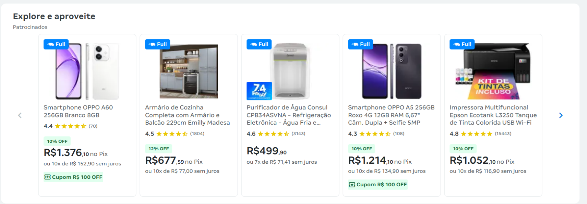

Realizei uma análise do site de e-commerce Magazine Luiza com o objetivo de identificar problemas de usabilidade e acessibilidade que impactam a experiência do usuário.
Usuários que utilizam leitores de tela podem ter dificuldade em compreender elementos importantes como botões e preços.
Usuários com TDAH ou sensibilidade a estímulos podem se sentir sobrecarregados devido à quantidade de informações simultâneas.
A falta de hierarquia visual dificulta a navegação e a tomada de decisão.
A seção de listagem de produtos foi selecionada por ser um ponto crítico na tomada de decisão do usuário. A análise identificou alta densidade de informação e baixa hierarquia visual, dificultando a escaneabilidade e a identificação de elementos essenciais como preço e avaliação.

A versão original apresenta múltiplos elementos com o mesmo peso visual, como selos, avaliações, preços e benefícios, resultando em sobrecarga cognitiva e dificuldade de leitura.
A proposta reorganiza a hierarquia visual dos elementos, priorizando o preço como principal ponto de decisão. Informações secundárias foram mantidas com menor destaque, reduzindo a carga cognitiva e melhorando a clareza da interface.
As melhorias propostas tornam o site mais acessível e reduzem a carga cognitiva, proporcionando uma experiência mais clara e eficiente para diferentes perfis de usuários.